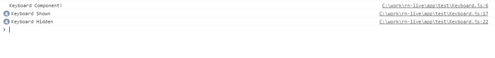

在React-native 的Component组件中有个Keyboard. github地址如下：go
官方提供的例子，监听键盘的弹出与消失。Demo如下：
import React, { Component } from 'react';
import { Keyboard, TextInput } from 'react-native';
class Example extends Component {
componentWillMount () {
this.keyboardDidShowListener = Keyboard.addListener('keyboardDidShow', this._keyboardDidShow);
this.keyboardDidHideListener = Keyboard.addListener('keyboardDidHide', this._keyboardDidHide);
}
componentWillUnmount () {
this.keyboardDidShowListener.remove();
this.keyboardDidHideListener.remove();
}
_keyboardDidShow () {
alert('Keyboard Shown');
}
_keyboardDidHide () {
alert('Keyboard Hidden');
}
render() {
return (
<TextInput
onSubmitEditing={Keyboard.dismiss}
/>
);
}
}
Keyboard支持的监听事件如下：
@param {string} nativeEvent The `nativeEvent` is the string that identifies the event you're listening for. This can be any of the following:
- `keyboardWillShow`
- `keyboardDidShow`
- `keyboardWillHide`
- `keyboardDidHide`
- `keyboardWillChangeFrame`
- `keyboardDidChangeFrame`
使用的时候需要测试下Android和iOS下监听的事件是否都ok。 踩坑如下： Android 对keyboardWillShow 监听不到。
同样，我们在源码里可以找到使键盘消失的函数
/**
* Dismisses the active keyboard and removes focus.
*/
dismiss () {
dismissKeyboard();
}
我们如果需要使用时，可以如下：
const dismissKeyboard = require('dismissKeyboard’);
dismissKeyboard();
Keyboard中bug截图：

[全文完]